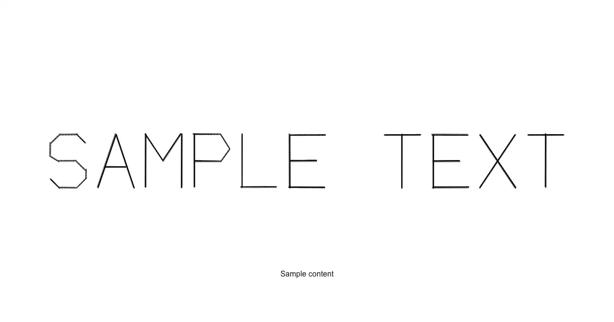

A full-bleed hero wordmark drawn as a genuine stroke-based vector font, the way an XY vector CRT (Asteroids/Tempest/Vectrex-class arcade hardware, oscilloscope character generators) actually traced text: brightness at every point comes from simulated inverse beam speed, so corners and stroke endpoints glow while long straight runs stay dim, retraced 36 times a second with a short phosphor trail and a low-frequency deflection-coil jitter that never lets two frames land pixel-identical.

Rendered on the shadcn default neutral palette with harness-generated props.
pnpm dlx shadcn@4.21.0 add @ns-ui/hero-beam-glyph
| licence | ASSET |
|---|---|
| primitive base | none |
| type | registry:ui |
| files | src/components/ui/hero-beam-glyph.tsx |
| npm deps pulled | none beyond the pre-installed peer set |
| registry deps | — |
| semantic / palette / hex | 1 / 0 / 0 |
| writes shared ui/ | yes — can overwrite the project’s own primitives |